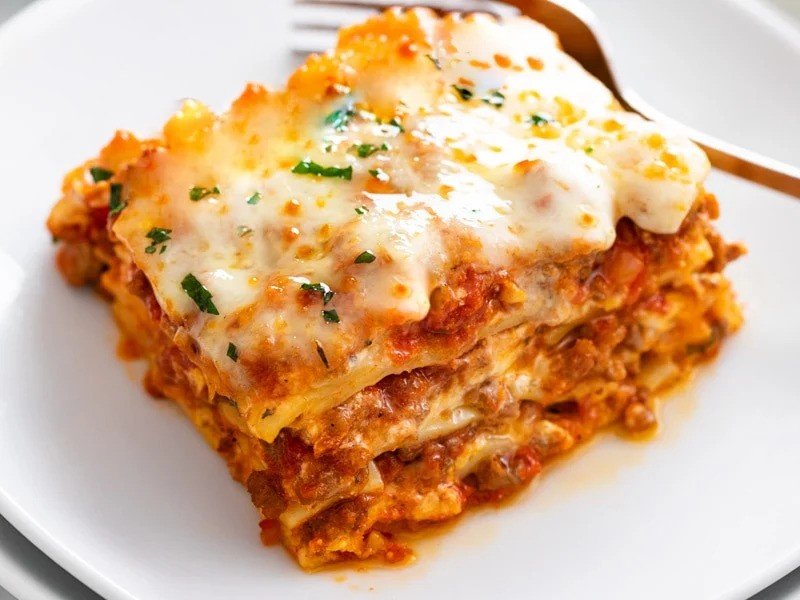

Lasagna

Description
Indulge your taste buds with the comforting layers of our Classic Homemade Lasagna.
This timeless Italian dish is a symphony of rich flavors, combining perfectly seasoned ground beef,
velvety ricotta cheese, and savory marinara sauce, all nestled between layers of tender pasta sheets.
Each bite is a journey through textures and tastes, as the lasagna bakes to golden perfection, creating a harmonious blend of cheesy goodness and robust tomato flavors.
Ingredients
For the Meat Sauce:
- 1 pound (450g) ground beef
- 1 onion, finely chopped
- 3 cloves garlic, minced
- 1 can (28 ounces/800g) crushed tomatoes
- 1 can (15 ounces/425g) tomato sauce
- 1 can (6 ounces/170g) tomato paste
- 1/2 cup (120ml) red wine (optional)
- 2 teaspoons dried oregano
- 2 teaspoons dried basil
- 1 teaspoon sugar
- Salt and pepper to taste
For the Cheese Mixture:
- 2 cups (475g) ricotta cheese
- 1 large egg
- 1/4 cup (60g) grated Parmesan cheese
- 2 tablespoons fresh parsley, chopped
- Salt and pepper to taste
Other Ingredients:
- 9 lasagna noodles, cooked al dente according to package instructions
- 3 cups (about 340g) shredded mozzarella cheese
- 1/2 cup (60g) grated Parmesan cheese
Optional Garnish:
- Fresh basil or parsley for garnish
Instructions
- In a large skillet, brown the ground beef over medium heat. Add chopped onions and garlic, and cook until onions are translucent.
- Stir in crushed tomatoes, tomato sauce, tomato paste, red wine (if using), oregano, basil, sugar, salt, and pepper. Simmer for about 20-30 minutes, allowing the flavors to meld.
- In a bowl, mix together the ricotta cheese, egg, grated Parmesan, chopped parsley, salt, and pepper.
- Preheat the oven to 375°F (190°C).
- In a 9x13-inch (23x33cm) baking dish, spread a thin layer of the meat sauce. Place three cooked lasagna noodles on top.
- Spread a portion of the ricotta mixture over the noodles, followed by a layer of shredded mozzarella. Repeat these layers until all ingredients are used, finishing with a layer of meat sauce and a generous topping of shredded mozzarella and grated Parmesan.
- Cover the baking dish with foil and bake for 25 minutes. Remove the foil and bake for an additional 15-20 minutes or until the cheese is bubbly and golden.
- Allow the lasagna to rest for about 10 minutes before slicing. Garnish with fresh basil or parsley if desired.